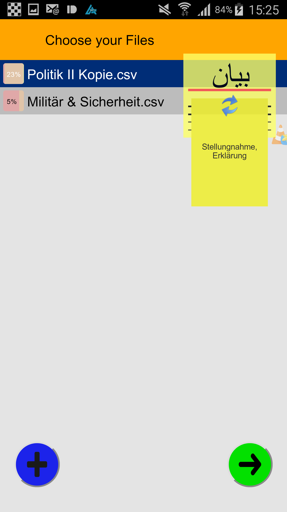
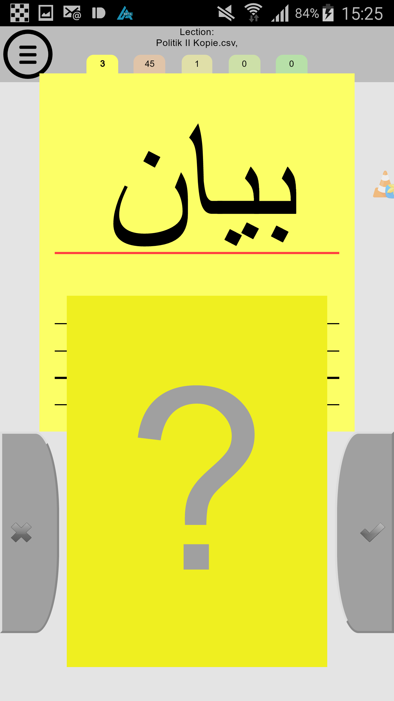
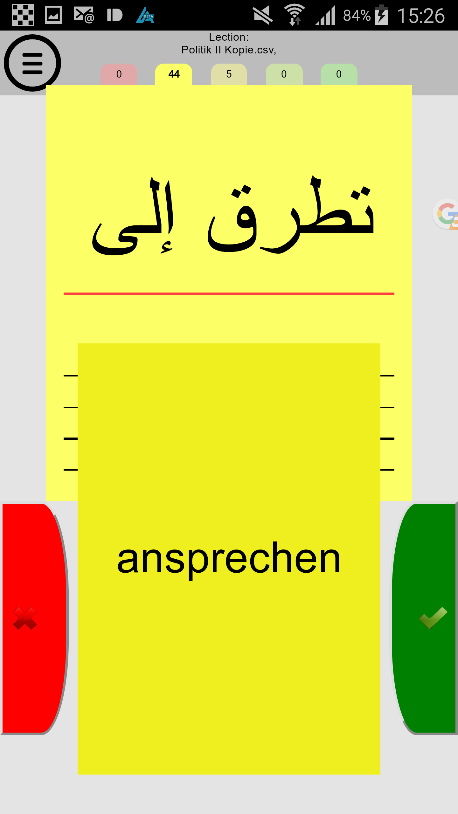
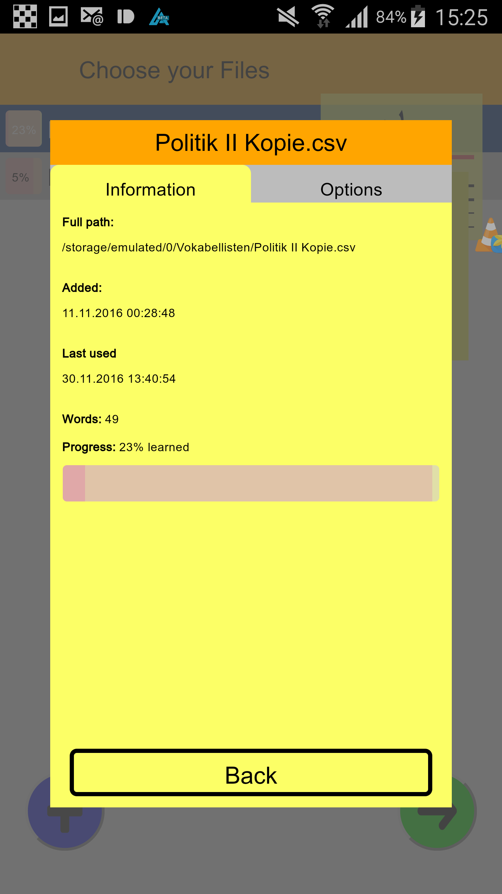

Install
VocabelTrainer
Learn your vocabulary with sets of virtual vocabulary index cards. Each index card contains a word of the foreign language on the front face. The back face of the card contains the translation in the known language and is hidden at first. The student can read the foreign word and decide on the translation, before the solution is revealed by a tap on the hidden face of the card. If the solution matches the solution the student thought of, the card can be swiped to the right, otherwise the card has to be swiped to the left.
The set of vocabulary cards is organised into 5 stacks. In the beginning all cards are shuffled into the 1st stack. Every time the student gets a word correct, this card gets mixed into the next higher stack. A word which was answered wrongly is mixed into the lower stack, unless the card is already in the lowest stack. The app always selects one card from the lowest possible stack, but skips the last 5 asked words. This way the words known the least will be asked more often, but single unknwon words will not be asked right after each other to avoid only learning them into ultra-short memory.
Once all words have been pushed to the highest (5th) stack, the app enters into a repetition mode. During this mode, all cards are asked once and wrongly answered words are mixed into the lowest (1st) stack while correctly answered words are kept in stack 5.
The app reads the words from vocabulary files, each containing word from one topic, one lesson or one section of a textbook. In the menu of the app, these files can be organised and one or more files chosen to learn together. After a learning session is finished the progress is written back into the separate files, so they can be studied on their own later.
Install the app
The app is not jet available on the Play Store. In the meantime it can be installed manually in a few simple steps:
1. Get the package:
The package for Android can be downloaded HERE. Download it on your computer and transfer it to the phone or download on the phone directly.
2. Open the package:
Should the installation not start automatically locate the package file VokabelTrainer.apk using any file explorer in your Download folder or where you saved it. A simple click should start the installation process.
3. Authorise installation:
Since this package is not obtained from the Play Store Android's security guidelines prevent the package to be installed. Your phone will warn you about the unknown source of this app. To install it, select in Settings, Security the option unknown sources. If possible I recommend to select the additional option "Allow only this installation" to prevent malicious apps to be installed in the future.
After these settings press the "Install" button and VokabelTrainer will be installed and will be available in your app-drawer.
Add vocabulary files
Vocabulary files can be opened from any location accessible from the android phone. This includes cloud storage services like Google Drive and Dropbox (depending on the Android version). To add vocabulary files to the phone via a USB connection, to a shared location in the cloud or download them onto the phone and open them from the location through the app.
The following shows the 3 different views of the app:

In the list view, all previously studied files are listed. With the "+" button new files can be added to the list. This button opens the default open dialog of your phone.
Each file can be selected or deselected by clicking on it. The selected files will be marked in blue. To the left of each file, a small symbol shows the study progress.
By holding down on a file in the list a detailed view about this file is opened.
The top right corner shows a preview of the selected files. By clicking the arrows on the preview, the languages asked and learned will be swapped.
To start the studying session, press the green button on the bottom right. This progresses to the study view.

The study view shows a word in the asked language. Once you have decided on the translation click the ? and the answer is reviewed.

If you got the answer correct press the green button or swipe the card with the answer towards the green button on the right. If you got the answer wrong, press or swipe the card to the red button on the left.
To return back to the list view press the list button in the top left corner.

The details view shows information about a file including the study progress. The "Options" tab contains additional options to manipulate the file.
- Remove file from list removes the vocabulary file from the list in the app. The file and its progress stays saved in the original place on the phone.
- Swap languages permanently swaps the asked and the learned language inside the file. This is needed if you want to study two files together which were created with different asking directions.
- Reset Progress will move all words in this file to the lowest stack. This way the study progress can be started from the beginning.
Each file contains words of one topic, one lesson or one section of a textbook, but it is really up to you how you organise your vocabulary files. A vocabulary file is basically a text file, containing one word pair per line. The foreign word and its translation are separated by a semi-colon ; . The name of the file is also used as the name for this topic in the app and the extension can be chosen arbitrary. Recommended extensions are .txt (text), .voc (vocabulary) or .csv (Comma separated value.
Here are some example Arabic/German vocabulary files:
Military and Security
Politics
Create / edit
Vocabulary files can be created with any text editor, for example "Notepad" on Windows, "kwrite" on Linux or "TextEdit" (with "plain text" selected in Settings for Format) on Mac. In this case the separating ; has to be inserted manually.
For your convenience, vocabulary can also be created using excel-like programs (including libreOffice/openOffice or Numbers on Mac). To create a vocabulary file in these programs, enter the foreign words into the first column of a table and their translations into the second column. After all words have been entered, export the table as CSV (comma separated values) and, if necessary, select ";" as column separator and "New line" as line separator.
This project has been programmed in PhoneGap and compiled for Android. It uses Cordova version 5.3.1 and, appart from the default plugins only uses the following 2 plugins to find vocabulary files:
- com.cesidiodibenedetto.filechooser 1.0.0 "FileChooser"
- com.megster.cordova.FileChooser 0.0.0 "File Chooser"
This full source code can be found in my
GitHub repository.